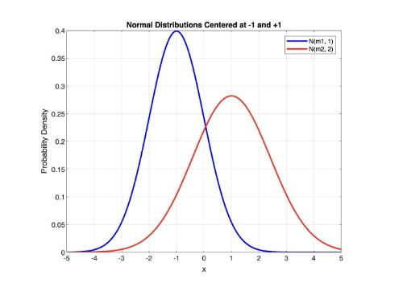
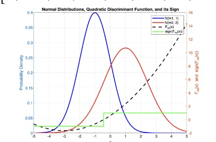
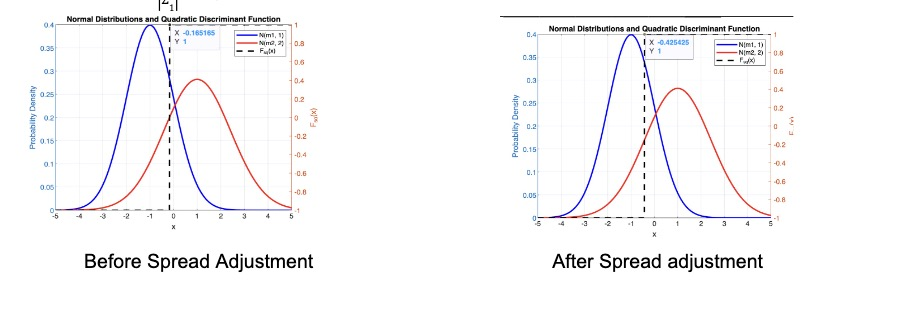
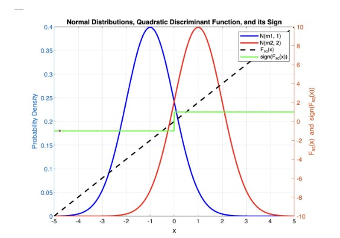
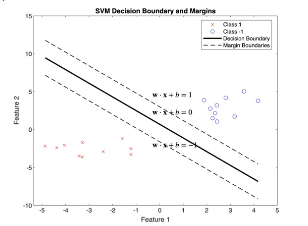

Support Vector Networks
Annotated by: Noah Schliesman
Published on: by Cortes and Vapnik
Abstract
“We rise by lifting others”
~Robert Ingersoil
We discuss Quadratic and Linear Decision Functions, Mahalanobis Distance, The Universal Approximation Theorem, Optimal Hyperplanes, Lagrangian Multipliers, Karush-Kuhn-Tucker (KKT) Conditions, Slack Variables, Hilbert Spaces, the Kernel Trick, and Mercer’s Theorem
A dataset can be non-linearly transformed into a higher-dimensional space and labeled using a hyperplane separation. This non-separable data can be classified using soft margins and polynomial kernels (CV95).
Soft margins entail the introduction of slack variables for each data point to measure the magnitude of misclassification. We aim to maximize the margin’s width while minimizing misclassification to attain the optimal tradeoff between generalization and error. Let \( w \) be the weight vector, \( b \) be the bias term, and \( C \) be the regularization parameter for this tradeoff. A soft margin should be constructed such that,
\( \min \frac{1}{2} \|w\|^2 + C \sum_{i=1}^{n} \xi_i \)
A polynomial kernel is a function that enables the algorithm to perform non-linear classification by mapping input vectors into a higher-dimensional space where linear separation is possible. The polynomial kernel is expressed as,
\( K(x, z) = (x^T z + c)^d \)
Introduction
They reference Fisher’s discriminant recognition for a quadratic decision function. Here, \( N(m_1, \Sigma_1) \) and \( N(m_2, \Sigma_2) \) are two normally distributed populations with means \( m_1 \) and \( m_2 \) and covariances \( \Sigma_1 \) and \( \Sigma_2 \). Let’s plot these distributions about two centers, -1 and +1 in MATLAB:

Cortes and Vapnik reference that the Bayesian solution to this decision can be described using a quadratic decision function:

\( F_{sq}(x) = \text{sign} \left( \frac{1}{2} (x - m_1)^T \Sigma_1^{-1} (x - m_1) - \frac{1}{2} (x - m_2)^T \Sigma_2^{-1} (x - m_2) + \ln \frac{|\Sigma_2|}{|\Sigma_1|} \right) \)
In the context of Gaussian distributions, the Mahalanobis distance is shown as the exponent of the PDF of a normal distribution \( p(x) \)
\( P(x) = \frac{1}{(2\pi)^{k/2} |\Sigma|^{1/2}} \exp \left( -\frac{1}{2} (x - m)^T \Sigma^{-1} (x - m) \right) \)
The first term, \( \frac{1}{2} (x - m_1)^T \Sigma_1^{-1} (x - m_1) \), represents the Mahalanobis distance of the point \( x \) from the mean \( m_1 \) given covariance matrix \( \Sigma_1 \).
The second term, \( -\frac{1}{2} (x - m_2)^T \Sigma_2^{-1} (x - m_2) \), represents the negative Mahalanobis distance of the point \( x \) from the mean \( m_2 \), given covariance matrix \( \Sigma_2 \).
The last term, \( \ln \frac{|\Sigma_2|}{|\Sigma_1|} \), adjusts for the difference in spreads of the two distributions.

The authors then consider the case when \( \Sigma_1 = \Sigma_2 \), which degenerates to a linear decision function:
\( F_{lin}(x) = \text{sign} \left( (m_1 - m_2)^T \Sigma^{-1} x - \frac{1}{2} (m_1^T \Sigma^{-1} m_1 - m_2^T \Sigma^{-1} m_2) \right) \)
Projection onto Discriminant Axis: The first term, \( (m_1 - m_2)^T \Sigma^{-1} x \), projects the data point \( x \) onto a direction that maximizes the separation between two classes.
Decision Threshold: The second term, \( -\frac{1}{2} (m_1^T \Sigma^{-1} m_1 - m_2^T \Sigma^{-1} m_2) \), adjusts the boundary to consider the means given a common covariance.

Due to the computational complexity of the quadratic algorithm, Fisher advises to use the linear decision function such that:
\( \Sigma = \tau \Sigma_1 + (1 - \tau) \Sigma_2, \quad \tau \in [0, 1] \)
The authors then mention Rosenblatt’s Perceptron, where each neuron implements a separating hyperplane. A perceptron is a type of neural network consisting of an input layer and an output neuron. Each input is connected to the output neuron by a weight, and then the perceptron computes a weighted sum and activation to decide the output. Mathematically, this is just,
\( I(x) = \text{sign} \left( \sum_j w_j x_j \right) \)
The big picture here is that our nonlinear activation functions, when combined with a sufficiently deep and wide network, can approximate any continuous function. This is known as the Universal Approximation Theorem.
The authors then provide an example of obtaining a feature space via adding polynomial features as a way of dimensionality expansion. They continue with two major concerns:
- How do we find a hyperplane that generalizes well?
- How can we make dimensionality expansion computationally feasible?
To answer the first question, the authors reference Vapnik’s work on optimal hyperplanes, where they determine the maximal margin between the vectors of the two classes using support vectors. Support vectors lie on the margin boundaries and are closest to the hyperplane. Since the best hyperplane maximizes the margin between each set of points, these support vectors are crucial in generalization.
The expected probability of an error on unseen data is bounded by the ratio of the expected number of support vectors to the number of training vectors. A smaller ratio leads to better generalization at the risk of underfitting. In practice, I’ve been able to get away with very few support vectors before underfitting occurs. This is described as:
\( E[Pr(error)] \leq E\left[ \frac{\text{number of support vectors}}{\text{number of training vectors}} \right] \)
The authors then establish the optimal hyperplane in feature space as,
\( w_0 \cdot z + b_0 = 0 \)
As mentioned, the weights for the hyperplane can be described as,
\( w_0 = \sum_{\text{support vectors}} w_j x_j \)
We can then simply expand our equation for the optimal hyperplane,
\( \sum_{\text{support vectors}} w_j x_j \cdot z + b_0 = 0 \)
Which in turn implies that our linear decision function is,
\( I(x) = \text{sign} \left( \sum_{\text{support vectors}} w_j x_j \cdot z + b_0 \right) \)
Optimal Hyperplanes
The authors continue with a mathematical description of the set of labeled training patterns,
\( \{(y_1, x_1), ..., (y_l, x_l)\}, \quad y_i \in \{-1, 1\} \)
Of which they define linear separability as,
\( w \cdot x_i + b \geq 1 \quad \text{if} \quad y_i = 1 \)
\( w \cdot x_i + b \leq -1 \quad \text{if} \quad y_i = -1 \)

Combining these inequalities yields,
\( y_i (w \cdot x_i + b) \geq 1, \quad i = 1, ..., l \)
As mentioned, the distance between the projections of the training vectors of the two classes should be maximized,
\( \rho(w, b) = \frac{\min_{x : y=1} x \cdot w}{\|w\|} - \frac{\max_{x : y=-1} x \cdot w}{\|w\|} \)
The normalized distance between two test points, \( x_1 \) and \( x_2 \), and our optimal hyperplane is just,
\( \rho(w, x) = \frac{|w \cdot (x_2 - x_1)|}{\|w\|} \)
For \( w \cdot x_1 + b = 1 \), \( w \cdot x_i = 1 - b \)
For \( w \cdot x_2 + b = -1 \), \( w \cdot x_i = -1 - b \)
And so,
\( \rho(w) = \frac{|w \cdot (x_2 - x_1)|}{\|w\|} = \frac{|w \cdot x_2 - w \cdot x_1|}{\|w\|} = \frac{2}{\|w\|} = \frac{2}{\|w_0\|} \)
The authors choose to formulate the optimal weight in terms of Lagrangian multipliers. Given a vector of Lagrangian multipliers as parameters, \( \Lambda_0 = (\alpha_0, ..., \alpha_l) \), they formulate this optimal weight vector.
\( w_0 = \sum_{i=1}^l \alpha_i^0 y_i x_i \)
I’ll review the concept of Lagrangian Multipliers here, so feel free to skim to the authors formulation of \( D_{ij} \) if you’re well versed on the subject.
Aside: Lagrangian Multipliers
Suppose we want to find the maximum or minimum of a function \( f(x, y) \) subject to the constraint \( g(x, y) = 0 \). We can introduce a new variable called the Lagrange multiplier (often denoted by \( \lambda \) or in this case \( \alpha_0 \)) and construct a new function called the Lagrangian \( \mathcal{L} \):
\( \mathcal{L}(x, y, \alpha_0) = f(x, y) + \alpha_0 g(x, y) \)
After forming our Lagrangian, we take the partials with respect to each variable:
\( \frac{\partial \mathcal{L}}{\partial x} = \frac{\partial f}{\partial x} + \alpha_0 \frac{\partial g}{\partial x} = 0 \)
\( \frac{\partial \mathcal{L}}{\partial y} = \frac{\partial f}{\partial y} + \alpha_0 \frac{\partial g}{\partial y} = 0 \)
\( \frac{\partial \mathcal{L}}{\partial \alpha_0} = g(x, y) = 0 \)
Of which we simply solve the system of equations to find \( x, y, \alpha_0 \).
Let’s illustrate this with an example. Consider the optimization problem:
\( \max_{(x, y)} f(x, y) \) subject to \( g(x, y) = 0 \) such that \( f(x, y) = xy, g(x, y) = x^2 + y^2 - 1 \)
Our Lagrangian becomes:
\( \mathcal{L}(x, y, \alpha_0) = xy + \alpha_0 (x^2 + y^2 - 1) \)
And our partials become:
\( \frac{\partial \mathcal{L}}{\partial x} = y + 2\alpha_0 x = 0 \)
\( \frac{\partial \mathcal{L}}{\partial y} = x + 2\alpha_0 y = 0 \)
\( \frac{\partial \mathcal{L}}{\partial \alpha_0} = x^2 + y^2 - 1 = 0 \)
Via algebraic simplification, we obtain the optimal \( (x, y) = (\frac{1}{2}, -\frac{1}{2}) \cup (-\frac{1}{2}, \frac{1}{2}) \)
Let’s consider a slightly more involved problem. Suppose we want to minimize a function \( f(x) \) subject to both equality constraints \( g_i(x) = 0 \) and inequality constraints \( h_j(x) \leq 0 \). Instead of just one Lagrange multiplier, we introduce two sets of multipliers, \( \alpha_i^0 \in \Lambda \) and \( \mu_j \in M \) (one for each constraint). Our Lagrangian becomes, \( \mathcal{L} \)
\( \mathcal{L}(x, \alpha_i^0, \mu_j) = f(x) + \sum_{i=1}^m \alpha_i^0 g_i(x) + \sum_{j=1}^p \mu_j h_j(x) \)
The Karush-Kuhn-Tucker (KKT) conditions are a set of equations and inequalities that define an optimal Lagrangian solution. There are four conditions:
- Stationarity: The gradient of the Lagrangian with respect to its solution variable(s) must be zero,
- Primal Feasibility: The optimization problem must hold the constraints posed above,
- Dual Feasibility: The Lagrange multipliers for the inequality constraints must be non-negative,
- Complementary Slackness: For each inequality constraint, the product of the Lagrange multiplier \( \mu_j \) and the constraint \( h_j(x) \) must be zero.
\( \nabla_x \mathcal{L}(x, \alpha_0, \mu) = \nabla_x f(x) + \sum_{i=1}^m \alpha_i^0 \nabla_x g_i(x) + \sum_{j=1}^p \mu_j \nabla_x h_j(x) = 0 \)
\( g_i(x) = 0 \quad \forall i \in [1, m], \quad h_j(x) \leq 0 \quad \forall j \in [1, p] \)
\( \mu_j \geq 0 \quad \forall j \in [1, p] \)
\( \mu_j h_j(x) = 0 \quad \forall j \in [1, p] \)
Again, let’s illustrate this with an example similar to the one above:
\( \min_{(x, y)} f(x, y) \) subject to \( g(x, y) = 0 \) and \( h(x, y) \leq 0 \) such that \( f(x, y) = x^2 + y^2, g(x, y) = x + y - 1, h(x, y) = x - 1 \)
Our Lagrangian becomes:
\( \mathcal{L}(x, y, \alpha_0, \mu) = x^2 + y^2 + \alpha_0 (x + y - 1) + \mu (x - 1) \)
From here, compute the partial derivatives with respect to \( x, y, \alpha_0, \mu \) and set to zero. Using the other four equations posed by the KKT conditions, you can algebraically find a solution such that \( (x, y) = (\frac{1}{2}, \frac{1}{2}) \).
We now need to find a way to capture the interactions between all pairs of training samples. We want to combine the similarity of feature vectors with the interaction of their class labels. Particularly,
\( D_{ij} = y_i y_j x_i \cdot x_j \)
Intuitively, this formulation makes sense because when the labels are different \( y_i y_j = -1 \) and when the labels are the same, \( y_i y_j = 1 \), whereas the dot product measures similarity.
Now it is advisable to maximize the sum of the Lagrange multipliers, while capturing the weighted pairwise interactions. The sum of Lagrangian multipliers can be expressed as,
\( \Lambda^T 1 = \sum_{i=1}^l \alpha_i \)
We also need to represent the quadratic form of the interactions between the Lagrange multipliers to penalize high values of \( \alpha_i \), promote sparsity, and maximize the margin. We also need to include a coefficient of \( \frac{1}{2} \) to avoid double counting. Thus,
\( -\frac{1}{2} \Lambda^T D \Lambda = -\frac{1}{2} \sum_{i=1}^l \sum_{j=1}^l \alpha_i \alpha_j D_{ij} \)
Our convex optimization problem then becomes,
\( \max_{\alpha_i, \alpha_j \in \Lambda} \left( \Lambda^T 1 - \frac{1}{2} \Lambda^T D \Lambda \right) = \max_{\alpha_i, \alpha_j \in \Lambda} \left( \sum_{i=1}^l \alpha_i - \frac{1}{2} \sum_{i=1}^l \sum_{j=1}^l \alpha_i \alpha_j y_i y_j x_i \cdot x_j \right) \)
The authors then note the constraints to our problem. Each Lagrange multiplier corresponds to a training vector and represents the influence that vector has on the position and orientation of the optimal hyperplane. A positive means that the corresponding vector is a support vector or a margin violation (of which is later explained). The non-negativity constraint of the Lagrange multiplier ensures the nature of the maximization is possible,
\( \Lambda > 0 \)
To ensure the optimal hyperplane is not biased towards one class, we must exert a constraint that ensures a balance between the influence exerted by positive and negative labels on the decision boundary. In other words,
\( \Lambda^T Y = \sum_{i=1}^n \alpha_i^0 y_i = 0 \)
Since \( W(\Lambda_0) = \Lambda^T 1 - \frac{1}{2} \Lambda^T D \Lambda = \sum_{i=1}^l \alpha_i - \frac{1}{2} \sum_{i=1}^l \sum_{j=1}^l \alpha_i \alpha_j y_i y_j x_i \cdot x_j \), they obtain the insight that the maximum of the functional can be derived from the maximum margin.
\( W(\Lambda_0) = \frac{w_0 \cdot w_0}{2} = \frac{2}{\rho_0^2} \)
Furthermore, the inequality holds for a large \( W_0 \) so that the model is both optimal and generalizable,
\( W(\Lambda^*) > W_0 \)
Algebraically, we can also see that all hyperplanes that separate the training data have a margin,
\( \rho > \frac{2}{W_0} \)
The basic pseudocode for maximizing the functional is described as:
Initialize \( \Lambda^* \) to an empty vector
Initialize \( W_0 \) to a large constant
Divide training data into portions with a small number of training vectors
For each portion of training data:
Solve quadratic problem to determine hyperplane
Let \( \Lambda_i \) be the vector that maximizes the functional
For all coordinates of \( \Lambda_i \):
If \( \Lambda_i = 0 \):
Remove non-support training vectors corresponding to \( \Lambda_i \)
Create a new set of training data with support vectors \( T_i \)
Add vectors that do not satisfy \( y_i (w \cdot x_i + b) \geq 1 \) to \( T_i \)
Construct new functional and maximize to find \( W_i(\Lambda) \) \( \Lambda_{i+1} \)
If \( W_i(\Lambda) > W_0 \)
\( \Lambda^* = \Lambda_{i+1} \)
The Soft Margin Hyperplane
Similar to what I did with Lagrangian multipliers, I’m going to review slack variables before diving into this section. If you’re proficient in this technique, feel free to skim.
Aside: Slack Variables
Slack variables are used to measure the degree to which constraints are violated. They allow a model to tolerate errors in training data, which can be robust in the presence of noise.
In convex optimization, constraints generally involve inequalities, such as \( g(x) \leq 0 \). We can then introduce a slack variable to rewrite the constraint as \( \xi \geq 0, g(x) + \xi = 0 \). This can be particularly useful in the interior-point method, where all constraints need to be strictly feasible, that is all inequalities need to be held as marginal equalities.
We’ve already used slack variables in our formulation of the KKT conditions, particularly in that of primal feasibility and complementary slackness.
Recall that the margin was derived to be \( \rho(w) = \frac{2}{\|w\|} \). In turn, maximizing the margin entails minimizing the weights. To make this optimization problem quadratic, we aim to,
\( \min_{w, b} \frac{1}{2} \|w\|^2 \)
Now it’s time to incorporate the slack variables to allow a margin of separation error. Let there be a regularization parameter \( C \) that controls the trade-off between maximizing the margin and minimizing the classification error.
In the case when training data cannot be separated without errors, we aim to minimize the functional given a regularization parameter,
\( \Phi(\xi) = C \sum_{i=1}^l \xi_i^0 \)
Which in turn yields the minimal subset of training errors. To ensure optimization feasibility and proper penalization of slack variables, we must add a monotonic convex function \( F(u) \) in minimizing our functional.
Recall that a monotonic convex function has two properties:
- Convexity: Any line segment connecting two points on the function lies above or on that function, that is,
- Monotonicity: The function either increases or decreases as the input increases, but not both. In other words,
\( F(\lambda x + (1 - \lambda) y) \leq \lambda F(x) + (1 - \lambda) F(y) \quad \forall x, y \in \mathbb{R}^n, \lambda \in [0, 1] \)
\( x \leq y \Rightarrow F(x) \leq F(y) \quad \text{or} \quad x \leq y \Rightarrow F(x) \geq F(y) \quad \forall x, y \in \mathbb{R}^n \)
The authors choose the case of \( F(u) = u^2 \) for mathematical simplicity. Thus, the full quadratic optimization problem can be posed as,
\( \min_{w, b, \xi} \frac{1}{2} \|w\|^2 + C \sum_{i=1}^l \xi_i^0 \)
Subject to,
\( y_i (w \cdot x_i + b) \geq 1 - \xi_i \quad \forall i \in [1, l], \quad \xi_i \geq 0 \quad \forall i \in [1, l] \)
Thus, the dual form of the Support Vector Machine (SVM) objective function has been established. Let’s go back to the original maximization problem, where,
\( \max_{\Lambda} \left( \Lambda^T 1 - \frac{1}{2} \Lambda^T D \Lambda \right) \)
Let the smallest admissible value of the functional be \( \delta \)
\( \delta = \alpha_{\text{max}} = \max (\alpha_1, ..., \alpha_l) \)
We want to add a term to our maximization problem that regularizes the influence of Lagrange multipliers and accounts for the soft margin by controlling the misclassification error. The authors in turn add a term to the primal problem. The full primal maximization becomes:
\( \max_{\Lambda} \left( \Lambda^T 1 - \frac{1}{2} \Lambda^T D \Lambda + \frac{\delta^2}{C} \right) = \max_{\Lambda} \left( \Lambda^T 1 - \frac{1}{2} \Lambda^T D \Lambda + \frac{\alpha_{\text{max}}^2}{C} \right) \)
Subject to,
\( \Lambda^T Y = 0, \quad \delta \geq 0, \quad 0 \leq \Lambda \leq \delta 1 \)
The first constraint ensures that the contribution of both classes to the decision boundary is unbiased. The second constraint ensures that the upper bound on the Lagrange multipliers is non-negative for decision boundary contribution. The last constraint ensures that each Lagrange multiplier lies in a specified range, which in turn implies \( \delta \leq C \)
The authors mention the insight that the problem of “constructing the soft margin classifier is unique and exists for any dataset” (CV95).
Convolution of the Dot-Product in Feature Space
The authors explain that the hyperplane should be constructed in the feature space rather than the input space, and so we should transform the input vector \( x \) into a feature vector using a vector function \( \phi \). That is,
\( \phi: \mathbb{R}^n \to \mathbb{R}^N \)
Which yields the transformed vectors,
\( \phi(x_i) = (\phi_1(x_i), \phi_2(x_i), ..., \phi_N(x_i)), \quad i \in [1, l] \)
With hyperplanes:
\( f(x) = w \cdot \phi(x) + b
Similar to that of the input vector hyperplane analysis, the weight vectors can be written as a linear combination of support vectors,
\( w = \sum_{i=1}^l y_i \alpha_i \phi(x_i) \)
We can then expand the classification function,
\( f(x) = \sum_{i=1}^l y_i \alpha_i \phi(x_i) \cdot \phi(x) + b \)
While brief, the authors mention that the construction of support-vector networks comes from the general forms of the dot-product in a Hilbert Space. At its core, this is one of the most important realizations in machine learning and is referred to as the Kernel Trick.
Similar to what I did with Lagrange Multipliers and Slack Variables, I’d like to expand a bit on what Hilbert Spaces really are. For those who are proficient, feel free to skim.
Aside: Hilbert Spaces
At their core, Hilbert spaces are defined as a complete inner product space.
We can think of the inner product on a vector space \( V \langle \cdot, \cdot \rangle \) as a function that measures similarity between two vectors. The inner product must hold the following properties:
- Linearity in the First Argument: The inner product must respect addition and scalar multiplication when applied to the first vector. In other words,
- Conjugate Symmetry: The inner product of two vectors is the same if you swap the vectors, but you need to take the complex conjugate if you are working with complex numbers. That is,
- Positive Definiteness: The inner product of a vector with itself is always a non-negative number and only zero if the vector itself is the zero vector (no length). So,
\( \langle \alpha u + v, w \rangle = \alpha \langle u, w \rangle + \langle v, w \rangle \)
\( \langle u, v \rangle = \langle v, u \rangle \)
\( \langle u, v \rangle \geq 0, \langle u, u \rangle = 0 \text{ iff } u = 0 \)
Let’s discuss completeness now. In a Hilbert space, the length (or norm) of a vector is given by the square root of the inner product of the vector with itself, thereby measuring how big the vector is,
\( \|x\| = \sqrt{\langle x, x \rangle} \)
Okay, so big deal? Well let’s consider a Cauchy sequence, of which is a sequence of vectors that get closer and closer to each other as you go further in the sequence. We define a Hilbert space to be complete if every Cauchy sequence of vectors converges to a limit that is also in the Hilbert space.
Formally, a sequence is a Cauchy sequence if,
\( \forall \epsilon > 0, \exists N \in \mathbb{Z} \text{ s.t. } \forall m, n > N, \|x_m - x_n\| < \epsilon \)
Such a sequence converges if,
\( \lim_{n \to \infty} \|x_n - x\| = 0 \)
We can now describe the Kernel function as the inner product of a Hilbert space,
\( K(u, v) = \phi(u) \cdot \phi(v) = \langle \phi(u), \phi(v) \rangle \)
Such a Kernel function can be expanded using the eigendecomposition due to the property of conjugate symmetry (as revealed through Hilbert-Schmidt Theory).
\( K(u, v) = \sum_{i=1}^\infty \lambda_i \phi_i(u) \cdot \phi_i(v) \)
Resultantly, if you integrate the product of the kernel and the eigenfunction over \( u \), you get the eigenfunction multiplied by the eigenvalue \( \phi_i(v) \lambda_i \).
\( \int K(u, v) \phi_i(u) du = \lambda_i \phi_i(v) \)
The authors note that such eigenvalues must be positive semi-definite. If the kernel matrix has negative eigenvalues, it cannot be guaranteed to represent a valid inner product. Negative eigenvalues can also lead to non-convex optimization, leading to difficulties finding global extrema.
Mercer’s Theorem gives us a rule to check if our kernel behaves properly in our higher-dimensional space and is positive semi-definite. If you can plug any reasonable function into the kernel and get a positive result when you integrate over all possible values of vector \( u \) and vector \( v \). It says,
\( \int \int K(u, v) g(u) g(v) dudv > 0 \)
Such that,
\( \int g^2(u) du < \infty \)
The authors provide a kernel that measures the similarity based on the distance between \( u \) and \( v \) with a parameter \( \sigma \), which controls the spread of the kernel. The following kernel can be seen as convolution because it integrates the information from the dot product (distance) and smooths it using the exponential function.
\( K(u, v) = \exp \left( -\frac{|u - v|}{\sigma} \right) \)
Since a kernel can be given by any function satisfying Mercer’s Theorem, the authors choose to construct a polynomial classifier of degree \( d \),
\( K(u, v) = (u \cdot v + 1)^d \)
Resultantly, decision surface can be rewritten in terms of the kernel as,
\( f(x) = \sum_{i=1}^\infty y_i \alpha_i K(u, v) \)
And the training sample interactions can be rewritten in a higher space using the kernel trick,
\( D_{ij} = y_i y_j K(u, v) \)
The authors also note that Radial Basis Function machines of the form,
\( f(x) = \text{sign} \left( \sum_{i=1}^n \alpha_i \exp \left( -\frac{|x - x_i|^2}{\sigma^2} \right) \right) \)
Can then be implemented using the kernel trick,
\( K(u, v) = \exp \left( -\frac{|x - x_i|^2}{\sigma^2} \right) \)
Experimental Analysis
The authors were able to achieve state-of-the-art performance (at the time) on the NIST Postal Service digit recognition dataset. They construct polynomials of degree 4 with a very small amount of support vectors (~165). They extend the idea of optimal hyperplanes to that which uses soft margin and show the efficiency of the kernel trick.
For MATLAB code, please reach out: